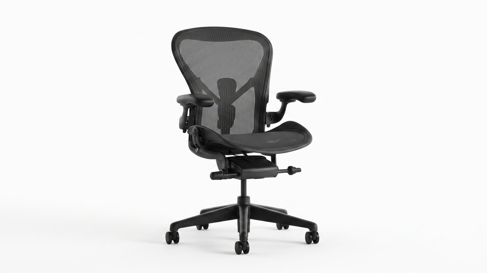
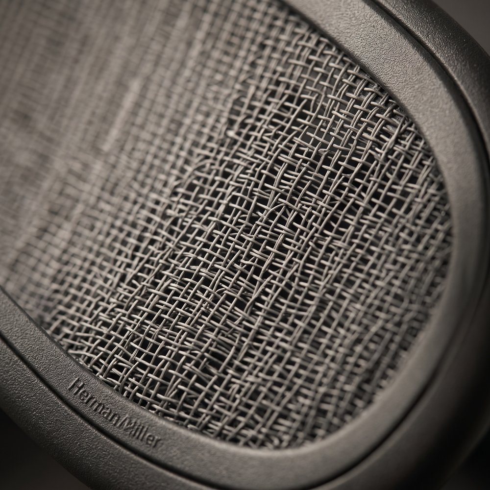
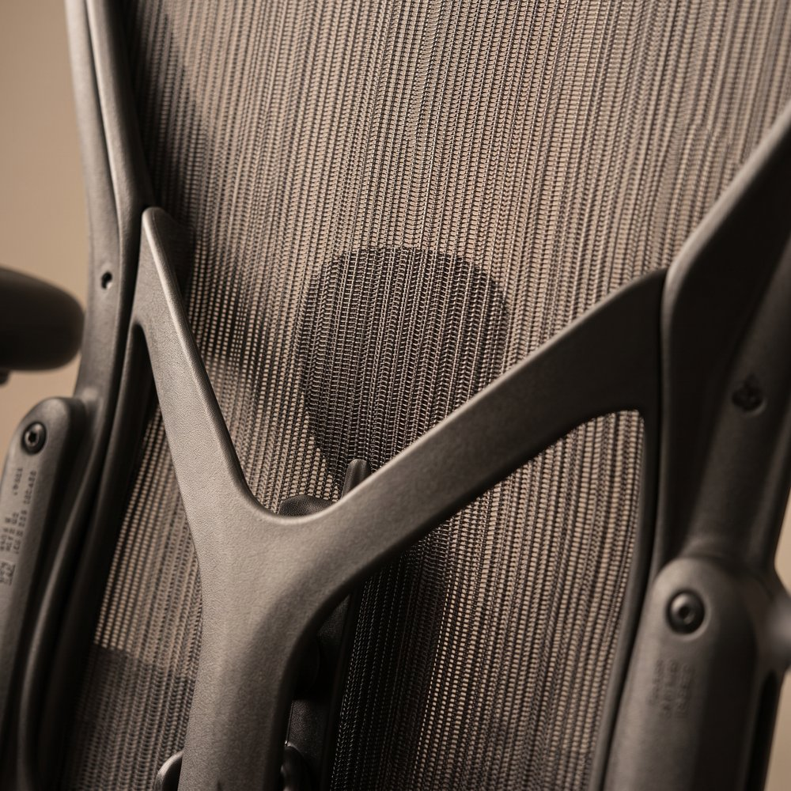
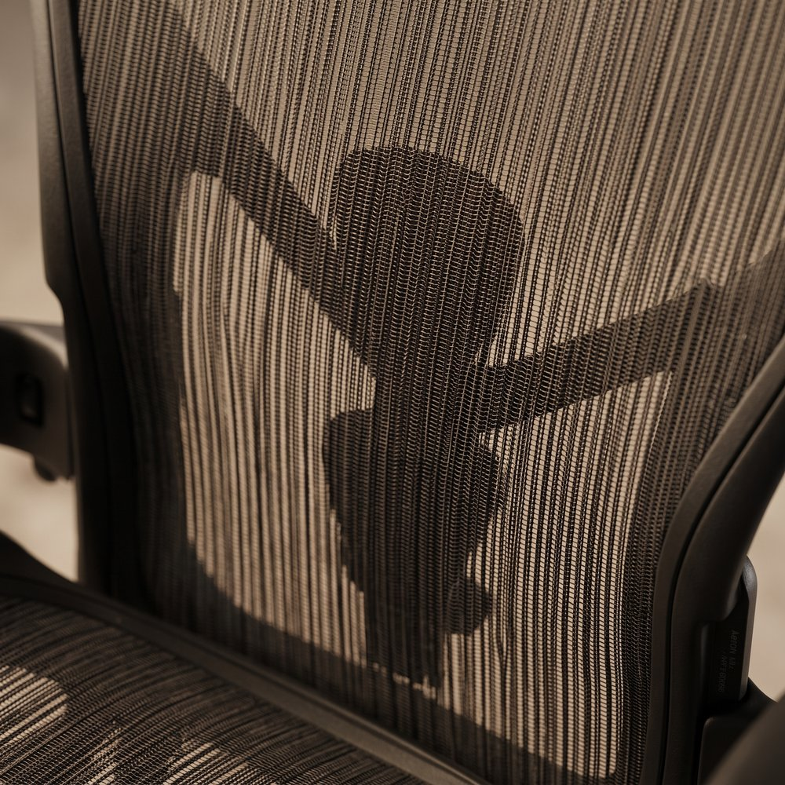
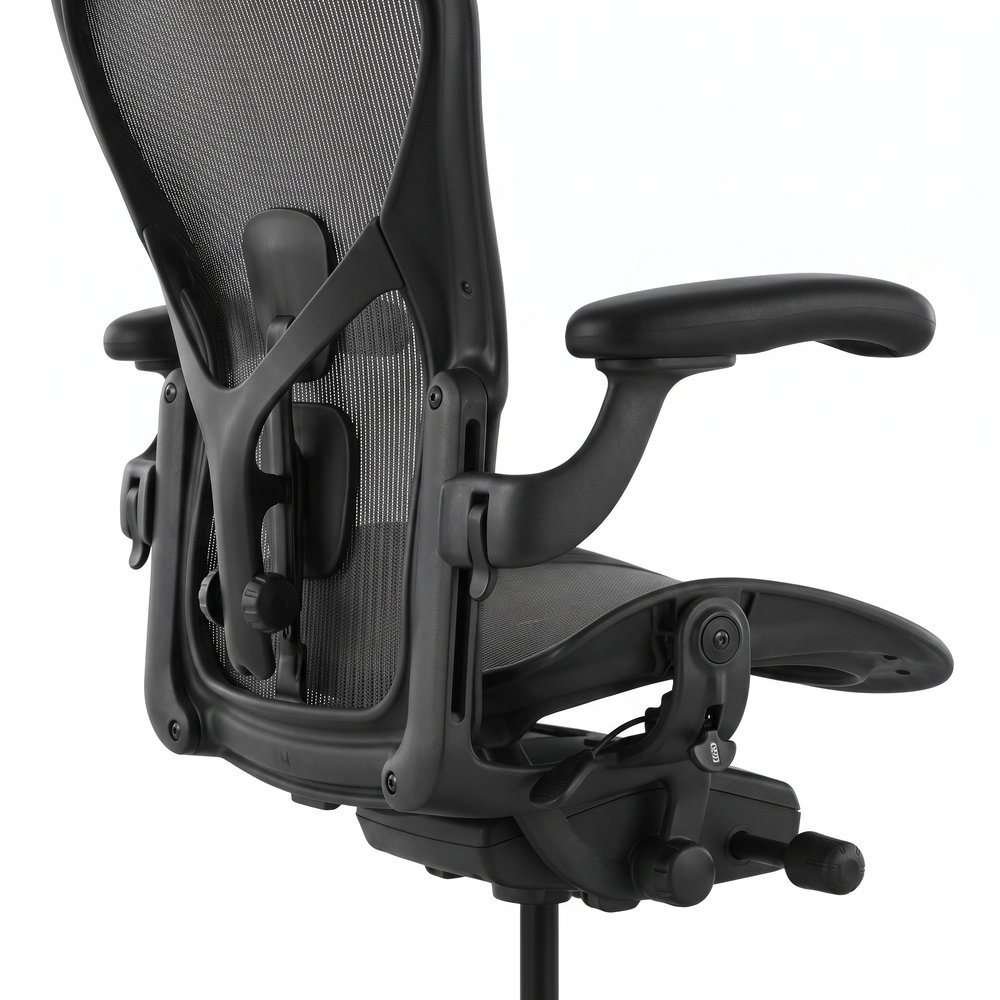
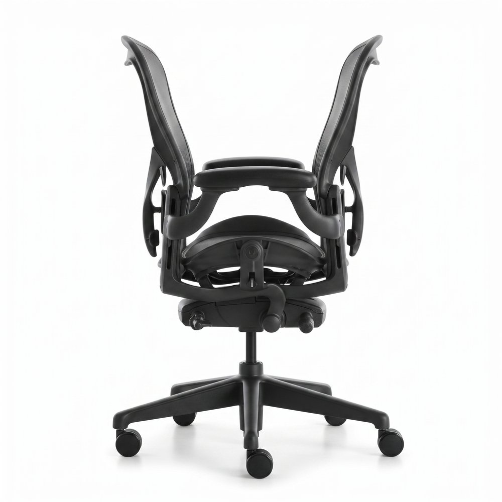
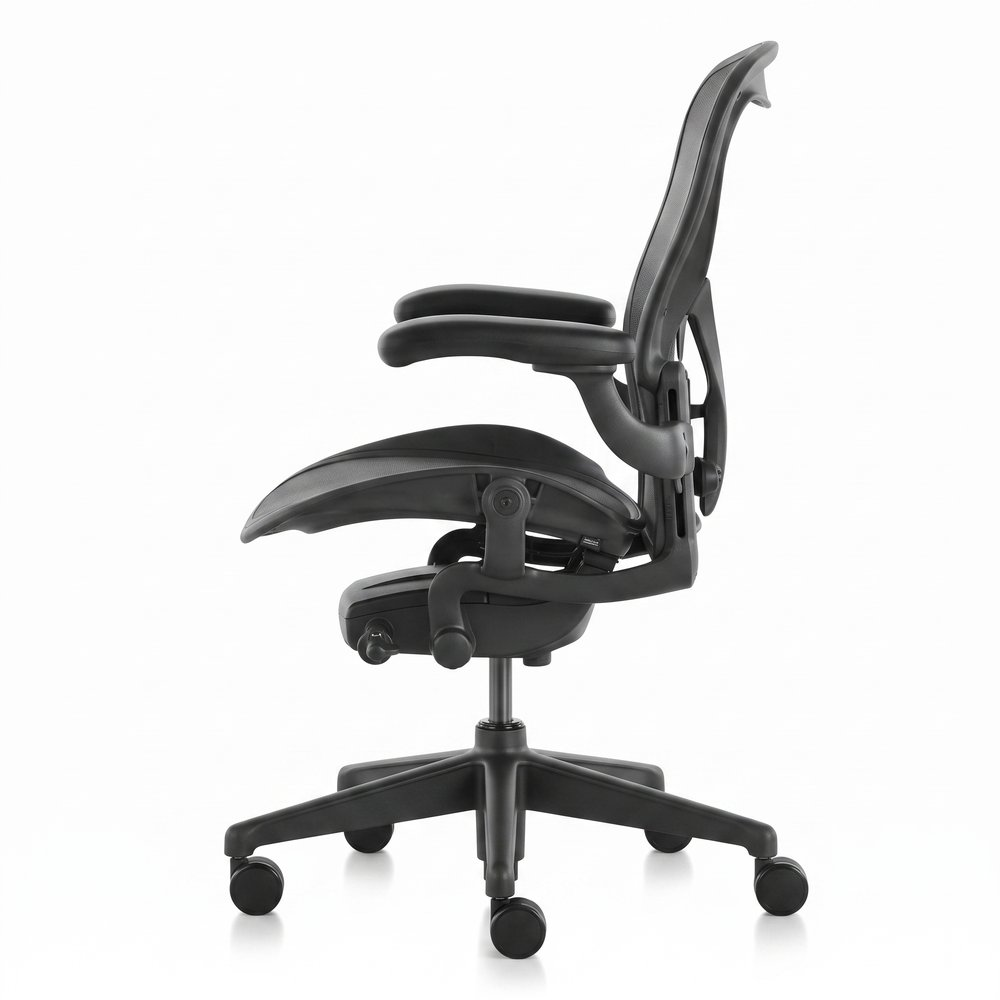
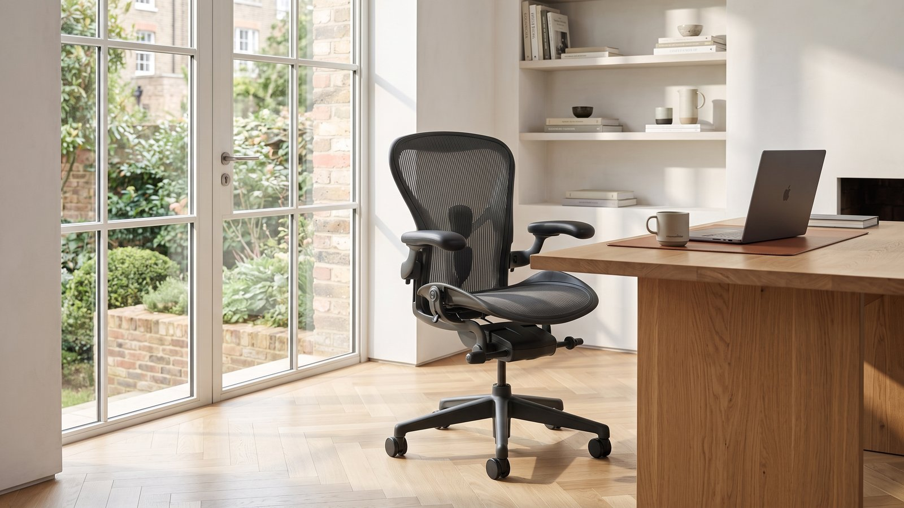
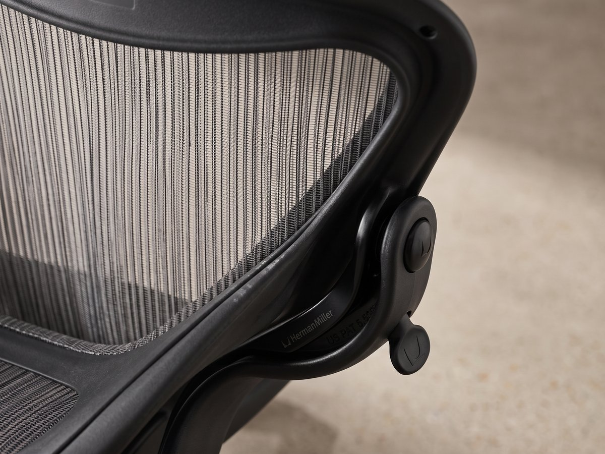
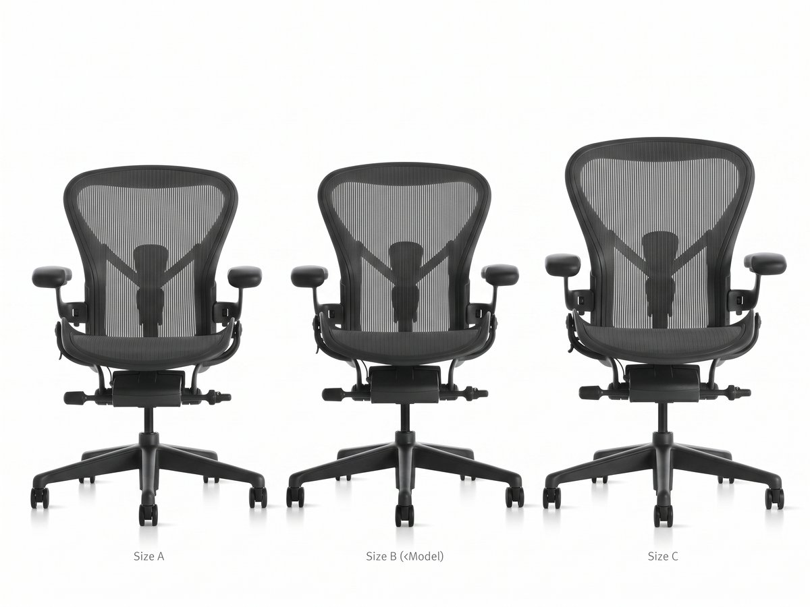

01 — Podpora páteře
PostureFit SL
Pružná síťovina 8Z Pellicle rozděluje oporu do osmi zón, aby podpora páteře fungovala v různých polohách sezení.

Aeron Chair spojuje ikonický industriálně-ergonomický design s prosvětlenou síťovinou a rozpoznatelnou siluetou. Je navržená pro lidi, kteří chtějí ergonomii, podporu páteře a jistotu, že jejich pracovní židle bude fungovat stejně dobře, jak vypadá.






Herman Miller Aeron Chair je kancelářská židle pro náročné uživatele, kteří chtějí ergonomii bez kompromisů. Sedák i opěrák jsou z pružné síťoviny 8Z Pellicle s osmi zónami podpory, mechanismus Harmonic Tilt zajišťuje plynulé naklánění a tři velikosti A, B, C sedí na postavy zhruba 147 až 198 cm. Podle velikosti nabízí nosnost 136 až 181 kg.
Cena: 49 990 Kč | Herman Miller Aeron Chair za 49 990 Kč. Investice do každodenní ergonomie s 12letou zárukou a více než 50 % recyklovaných materiálů.
Pružná síťovina 8Z Pellicle na sedáku i opěráku rozděluje oporu do osmi zón, aby podpora páteře fungovala v různých polohách sezení. Mechanismus Harmonic Tilt umožňuje plynulé naklánění a přirozený pohyb při práci.
Pružná síťovina 8Z Pellicle rozděluje oporu do osmi zón, aby podpora páteře fungovala v různých polohách sezení.
Sedák i opěrák z pružné síťoviny 8Z Pellicle s osmi zónami podpory rozkládá tlak a udržuje pohodlí i po dlouhých hodinách.
Mechanismus Harmonic Tilt umožňuje plynulé naklánění a přirozený pohyb při práci, včetně širokého rozsahu nastavení výšky a sklonu.


Židle je vyrobena z více než 50 % recyklovaných materiálů a až z 91 % je recyklovatelná. Spolu s 12letou zárukou jde o udržitelný výběr, který spojuje dlouhodobé používání s promyšleným přístupem k materiálům.

Velikost A je pro postavy zhruba 147 až 163 cm, velikost B pro 163 až 185 cm a velikost C pro 185 až 198 cm. Nosnost podle velikosti je 136 až 181 kg. Správná volba velikosti je klíčová pro pohodlí, ergonomii i podporu páteře.
Kompletní informace pro zákazníka, který chce před nákupem znát všechny detaily — rozměry, materiály, konfigurace a nastavovací prvky.